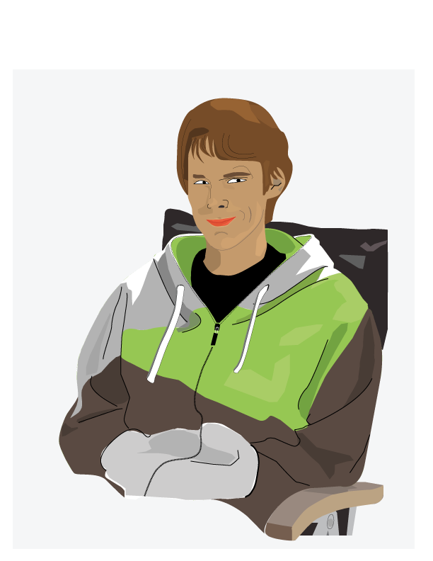

Här kommer jag skriva lite om mig själv, Hej!
Intressen
På min fritid så gör jag bland annat.
- Spelar datorspel
- Flyger
- Lyfter
- Flyger
- Landar
- Kollar serier
Familj
Jag bor hemma hos mina båda föräldrar fast än att jag är 22 år gammal... Jag har också en storasyster och en storebror.
Vad är jag bra och dålig på?
Vad är jag bra på?
- Studera
- Sova
- Tänka
Vad är jag dålig på?
- Städa
- Laga mat
- Programmera
Tidigare utbildning
Jag gick teknisk inriktning på gymnasiet och efter det så gick jag en friluftskurs på linné.
Arbetslivserfarenhet
Innan jag började studera så jobbade jag bland annat på Coop Forum där jag satt i kassan och sprang runt och plockade upp varor. Jag jobbar också på Kalmartravet två gånger i månaden.
Har du programmerat tidigare?
Jag har aldrig programmerat tidigare i mitt liv så detta kommer bli skoj!
Vad fick dig att söka utbildningen?
Jag sökte faktiskt webbprogramerare som förstaval men jag slutade som första reserv efter andra uttagningen så därför valde jag interaktionsdesign istället.
Tankar inför framtiden?
Jag vet inte hur min framtid kommer se ut, jag hoppas på att den blir bra och att jag får ett jobb som jag trivs med och som jag vill gå till varje dag. Innan så ville jag sluta som kapten på en boeing 747-8
- Boeing 747-8?
- Ett stort jävla flygplan som tar 467 passagerare